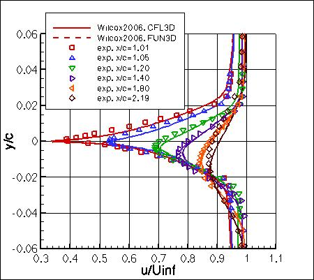
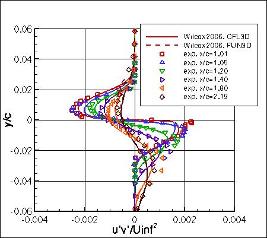

Public Access (formerly Langley Research Center)Turbulence Modeling Resource |
Jump to: SA Results, SSTm Results, SSG/LRR-RSM-w2012 Results, K-kL-MEAH2015m Results, EASMko2003-S Results, K-e-Rt Results
Return to: 2D Airfoil Near-Wake Case Intro Page
Return to: Turbulence Modeling Resource Home Page
2D Airfoil Near-Wake Validation Case
Wilcox2006-klim-m Model Results
Link to Wilcox2006-klim-m equations


Previously on this page the results were reported as Wilcox2006-klim solutions, but more properly they should be referred
to as Wilcox2006-klim-m. Essentially no difference is expected.
Note that thorough
grid studies were not performed for validation cases such as this one.
Some effort was made to ensure reasonable grid resolutions, but there may still be
small noticeable discretization errors. Therefore, these validation results shown should be considered
representative, but not "truth."
(See VERIF/2DANW for a verification version of this airfoil case.)
IMPORTANT NOTE: This validation case uses grids that only extend 20c from the airfoil.
It was later discovered that this farfield grid extent is too small for verification purposes.
Therefore, any results using only 20c grid extent should be viewed WITH CAUTION.
The verification case using 500c grid extent can be found at the link above.
Wilcox2006-klim-m results are shown for CFL3D and FUN3D on the
second-finest grid (1121x193).
Both CFL3D and FUN3D used freestream turbulence intensity=0.088% and freestream turbulent viscosity (relative to laminar)=0.009
(additional details can be found in the CFL3D User's Manual, Appendix H).
Please read note 5 on Notes on running CFD page.
Results between the two codes are nearly identical.
(On this grid level, CL=0.1615 and CD=0.01058 for CFL3D, and CL=0.1592 and CD=0.01053 for FUN3D.)
Note that these are compressible code results at "essentially incompressible" conditions of M=0.088.
There may be a very small influence of compressibility.
The data files from CFL3D are given here:
nak_cfl3d_vel_w06.dat,
nak_cfl3d_uv_w06.dat,
(Note: the profiles have been interpolated using Tecplot software onto pre-set points, that may or may
not correspond to the actual grid points or grid cells used in the computation.)
A typical CFL3D input file is:
nak_cfl3d_typical_w06.inp.
A typical FUN3D input file is:
fun3d.nml_typical_w06_2.
Note that this model is currently assigned
MRR Level 2 for the purposes of this website.
This is because at this time the TMBWG has results for this model
from two different codes from the same home organization.
The results on this page are therefore not necessarily
reliable until additional independent code(s) can be used to verify the model implementation.
Jump to: SA Results,
SSTm Results,
SSG/LRR-RSM-w2012 Results,
K-kL-MEAH2015m Results,
EASMko2003-S Results,
K-e-Rt Results Return to: 2D Airfoil Near-Wake Case Intro Page Return to: Turbulence Modeling Resource Home Page
Recent significant updates:
10/07/2014 - added cfl3d data files
Page Curators: Christopher Rumsey,
Ethan Vogel,
Clark Pederson
Last Updated: 03/03/2025